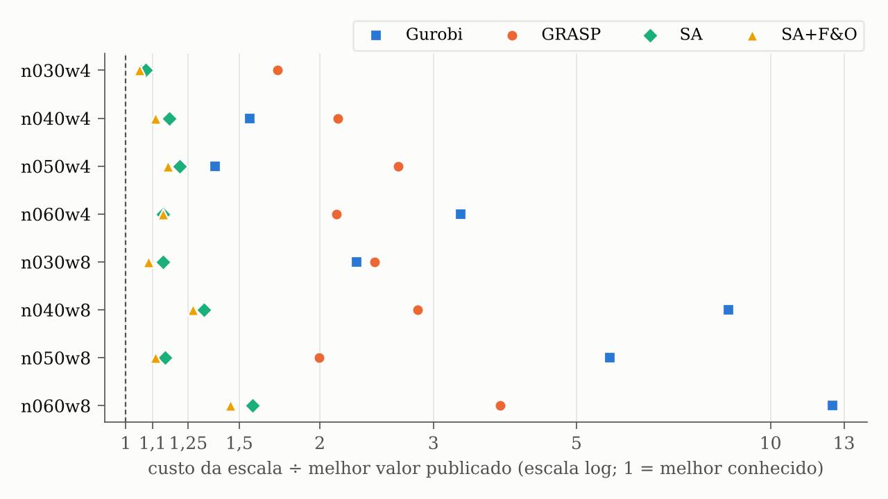
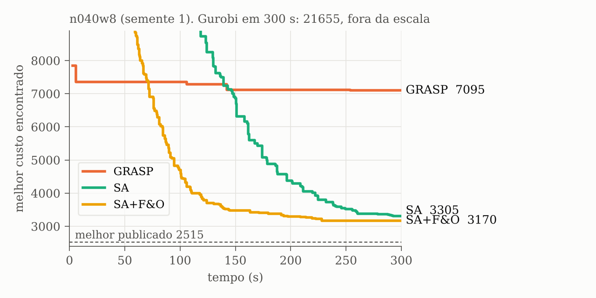

Eduardo Lopes
Universidade Federal de São Paulo – Instituto de Ciência e Tecnologia
São José dos Campos – SP
[e-mail]
Jorge Dourado
Universidade Federal de São Paulo – Instituto de Ciência e Tecnologia
São José dos Campos – SP
[e-mail]
RESUMO
Este trabalho estuda o problema de escalonamento de enfermeiros (Nurse Rostering Problem) na versão estática da Second International Nurse Rostering Competition (INRC-II), que atribui turnos e funções a cada enfermeiro em horizontes de quatro e oito semanas, sob restrições de cobertura, sequências de turnos e contratos. Propomos um modelo compacto de programação linear inteira, resolvido no AMPL com o Gurobi, e três métodos aproximados que compartilham uma avaliação incremental do custo: um GRASP com VND e busca local iterada, um Simulated Annealing e uma matheurística de busca em vizinhança grande do tipo fix-and-optimize. Em oito instâncias da literatura, com cinco minutos por execução, o solver não prova a otimalidade de nenhuma instância e se distancia muito do ótimo nas de oito semanas, enquanto o Simulated Annealing obtém as melhores escalas em seis das oito instâncias.
PALAVRAS CHAVE. Escalonamento de enfermeiros. Programação inteira. Metaheurísticas.
Tópicos: MH – Metaheurísticas; PO na Área de Saúde; PM – Programação Matemática.
ABSTRACT
This work studies the Nurse Rostering Problem in the static version of the Second International Nurse Rostering Competition (INRC-II), which assigns shifts and skills to each nurse over four- and eight-week horizons, subject to coverage, shift-succession and contract constraints. We propose a compact integer linear programming model, solved in AMPL with Gurobi, and three approximate methods that share an incremental cost evaluation: a GRASP with VND and iterated local search, a Simulated Annealing, and a fix-and-optimize large neighborhood search matheuristic. On eight benchmark instances, with five minutes per run, the solver proves optimality for none of them and falls far from the optimum on the eight-week instances, whereas Simulated Annealing obtains the best rosters in six of the eight instances.
KEYWORDS. Nurse rostering. Integer programming. Metaheuristics.
Paper topics: MH – Metaheuristics; OR in Health Care; MP – Mathematical Programming.
Hospitais funcionam ininterruptamente e precisam de equipes de enfermagem em todos os turnos. A escala de trabalho de cada enfermeiro (em quais dias trabalha, em qual turno e em qual função) precisa cobrir a demanda do hospital e, ao mesmo tempo, respeitar a legislação, os contratos e as preferências individuais. Escalas mal planejadas geram horas extras, cansaço e rotatividade, com efeito direto na segurança dos pacientes. Na Pesquisa Operacional, esse é o problema de escalonamento de enfermeiros (Nurse Rostering Problem, NRP), um dos problemas de escalonamento de pessoal mais estudados [Burke et al., 2004; Van den Bergh et al., 2013].
O NRP é NP-difícil [Cheang et al., 2003] e, além disso, as regras de sequência acoplam dias vizinhos: alterar um único dia de um enfermeiro muda suas sequências de trabalho, folga e turno, seus fins de semana e a cobertura daquele dia. Para comparar métodos de forma padronizada, a comunidade organizou competições internacionais com instâncias públicas, das quais a mais recente é a INRC-II [Ceschia et al., 2019]. Na versão estática dessas instâncias, em que o horizonte inteiro é planejado com toda a demanda conhecida, os melhores métodos exatos usam branch-and-price especializado e horas de computação [Legrain et al., 2020; Legrain e Omer, 2023].
Este trabalho investiga até onde chegam ferramentas acessíveis a um analista, um modelo compacto de programação linear inteira (PLI) e um solver comercial, e quanto métodos aproximados podem melhorar o resultado sob o mesmo limite de tempo. As contribuições são: (i) um modelo de PLI para o INRC-II estático, com linearização das regras de sequência e validado contra o avaliador oficial; (ii) três métodos aproximados, GRASP com VND e busca local iterada, Simulated Annealing e uma matheurística fix-and-optimize, que compartilham uma avaliação incremental do custo; e (iii) uma comparação, com o mesmo tempo e na mesma máquina, em oito instâncias da literatura, medindo a distância aos valores ótimos publicados.
O artigo está organizado assim: a Seção 2 descreve o problema; a Seção 3 revisa a literatura; a Seção 4 apresenta o modelo; a Seção 5 descreve os métodos aproximados; a Seção 6 traz os experimentos; e a Seção 7 conclui.
Dados um conjunto de enfermeiros N, um horizonte de W semanas (dias D = {0, …, 7W−1}), os turnos S = {Early, Day, Late, Night} e as habilidades K = {HeadNurse, Nurse, Caretaker, Trainee}, deve-se atribuir a cada enfermeiro, em cada dia, uma folga ou um par (turno, habilidade). Cada enfermeiro n possui um subconjunto de habilidades Kn e um contrato, que define os limites de turnos no horizonte, de dias seguidos de trabalho e de folga, e de fins de semana trabalhados. As restrições rígidas são: (H1) no máximo um turno por dia; (H2) cobertura mínima para cada dia, turno e habilidade; (H3) sucessões de turno proibidas (por exemplo, Late seguido de Early); e (H4) cada enfermeiro só exerce funções para as quais é habilitado. As restrições flexíveis, com os pesos da competição, são: (S1) cobertura ótima (peso 30 por pessoa faltante); (S2) mínimo e máximo de dias seguidos no mesmo turno (15) e de trabalho (30); (S3) mínimo e máximo de folgas seguidas (30); (S4) pedidos de folga (10); (S5) fins de semana completos (30); (S6) total de turnos no horizonte (20); e (S7) máximo de fins de semana trabalhados (30). O histórico de cada enfermeiro (último turno, sequências em andamento e totais acumulados) entra como dias anteriores ao horizonte. O objetivo é minimizar a soma ponderada das violações flexíveis.
As revisões de Cheang et al. [2003], Burke et al. [2004], Ernst et al. [2004] e Van den Bergh et al. [2013] catalogam as variantes do problema e mostram como a diversidade de regras e de dados dificultava a comparação entre métodos, o que motivou a criação de competições. Na primeira competição (INRC-I), os melhores resultados vieram de métodos baseados em programação inteira [Haspeslagh et al., 2014]. A INRC-II [Ceschia et al., 2019] trouxe horizontes multissemanais com histórico, quatro turnos, quatro habilidades e instâncias de 30 a 120 enfermeiros, que se tornaram referência.
Entre os métodos exatos, Santos et al. [2016] mostraram que um modelo compacto reforçado com cortes e heurísticas de PLI produz soluções de alta qualidade para o INRC-I. Para o INRC-II estático, Legrain et al. [2020] propuseram um branch-and-price baseado em rotações, e Legrain e Omer [2023] um branch-and-price por escalas completas com um algoritmo dedicado para o subproblema de caminho mínimo com recursos. Com ele, resolveram até a otimalidade todas as instâncias de quatro semanas e parte das de oito semanas, além de melhorar todos os limites conhecidos. Strandmark et al. [2020] combinaram geração de colunas com programação linear de primeira ordem em uma heurística.
Entre os métodos aproximados, Burke e Curtois [2014] compararam cadeias de ejeção e branch-and-price em instâncias de referência, e Ceschia et al. [2020] propuseram um Simulated Annealing com vizinhanças grandes para o INRC-II estático, competitivo sobretudo em horizontes longos. Métodos híbridos, como a geração de colunas acelerada por VNS de Gomes et al. [2017] e as matheurísticas de busca em vizinhança grande [Shaw, 1998; Pisinger e Ropke, 2010], combinam heurísticas e solvers. Este trabalho reúne essas frentes em uma comparação controlada: o modelo compacto resolvido por um solver comercial, duas metaheurísticas clássicas, GRASP [Feo e Resende, 1995] e Simulated Annealing [Kirkpatrick et al., 1983], e uma matheurística.
A variável principal é xndsk ∈ {0,1}, igual a 1 se o enfermeiro n faz o turno s com a habilidade k ∈ Kn no dia d; por construção, só existe para habilidades que o enfermeiro possui (H4). As variáveis binárias ands (faz o turno s no dia d) e wnd (trabalha no dia d) simplificam as regras de sequência; para d < 0 elas são fixadas pelo histórico. Os parâmetros são as demandas mínima mdsk e ótima odsk, os limites de contrato [minAn, maxAn] (turnos no horizonte), [minWn, maxWn] (dias seguidos de trabalho), [minOn, maxOn] (folgas seguidas), maxWEn (fins de semana), os limites por turno [minSs, maxSs], o conjunto de sucessões proibidas F, os pedidos de folga rnd e os turnos já trabalhados hn. O modelo é:
min 30 ∑ udsk + 15 Σturno + 30 Σtrabalho + 30 Σfolga + 10 ∑ rnd wnd + 30 ∑ cnk + 20 ∑ (tUn + tOn) + 30 ∑ gn (1)
| ands = ∑k∈Kn xndsk, wnd = ∑s ands ≤ 1 | ∀ n, d, s | (2) H1 |
| ∑n: k∈Kn xndsk ≥ mdsk | ∀ d, s, k | (3) H2 |
| andp + an,d+1,q ≤ 1 | ∀ n, d ≥ −1, (p,q) ∈ F | (4) H3 |
| udsk ≥ odsk − ∑n xndsk | ∀ d, s, k | (5) S1 |
| end ≥ ∑i = d−maxWnd wni − maxWn | ∀ n, d | (6) S2 |
| vndj ≥ (1 − wn,d−j−1) + ∑i=d−jd−1 wni + (1 − wnd) − (j+1) | ∀ n, d, j < minWn | (7) S2 |
| cnk ≥ wn,sáb(k) − wn,dom(k), cnk ≥ wn,dom(k) − wn,sáb(k) | ∀ n, semana k | (8) S5 |
| tUn ≥ minAn − hn − ∑d wnd, tOn ≥ hn + ∑d wnd − maxAn | ∀ n | (9) S6 |
| ynk ≥ wn,sáb(k), ynk ≥ wn,dom(k), gn ≥ ∑k ynk − maxWEn | ∀ n, k | (10) S7 |
As restrições (2) a (4) são as rígidas. A linearização das regras de sequência é o ponto central do modelo. Para um máximo (6), cada janela de maxWn+1 dias seguidos toda trabalhada força uma unidade de violação end, o que conta exatamente os dias em excesso. Para um mínimo (7), a variável vndj detecta o padrão “folga, exatamente j dias de trabalho, folga” que termina no dia d, e entra no objetivo com peso (minWn − j), o número de dias faltantes. As restrições análogas para as sequências de um mesmo turno (com ands, peso 15) e de folgas (com 1 − wnd, peso 30) foram omitidas; Σturno, Σtrabalho e Σfolga em (1) denotam as somas ponderadas dessas variáveis. Como o objetivo é de minimização, cada variável de violação assume no ótimo o menor valor permitido, e o valor de (1) coincide com a penalidade da escala. Verificamos essa propriedade fixando x nas soluções de referência da competição e em escalas aleatórias: o objetivo coincidiu, em todos os casos, com o custo calculado por um avaliador que reproduz o validador oficial. O modelo foi escrito em AMPL [Fourer et al., 2003] e tem de 26 mil a 108 mil variáveis e restrições nas instâncias estudadas.
A escala é uma matriz enfermeiro × dia cujo valor é a folga ou um par (turno, habilidade). H1 e H4 são garantidas pela representação; violações de H2 e H3 são penalizadas com peso 10.000, de modo que toda escala viável é preferível a qualquer inviável. A avaliação é incremental: os contadores de cobertura por (dia, turno, habilidade) são mantidos em memória, e o custo individual de um enfermeiro (S2 a S7 e H3) é recalculado em uma única passada por sua linha. Esse cálculo é compilado com o numba [Lam et al., 2015] e avalia cerca de um milhão de movimentos por segundo; sua equivalência com o avaliador oficial é verificada por testes automáticos. Usamos quatro vizinhanças: N1, nova atribuição de um enfermeiro em um dia, com a melhor habilidade disponível; N2, troca das atribuições de dois enfermeiros em um dia, que preserva a cobertura; N3, mesmo turno (ou folga) para um enfermeiro em L ∈ {2, …, 5} dias seguidos; N4, troca das atribuições de dois enfermeiros em L ∈ {2, 3, 4, 5, 7} dias seguidos.
Cada iteração do GRASP [Feo e Resende, 1995; Resende e Ribeiro, 2016] é independente das demais. A construção monta a escala dia a dia. Para cada vaga de demanda (primeiro as mínimas, depois as ótimas que compensam a penalidade S1), calcula-se o custo incremental cn de cada enfermeiro apto e livre naquele dia. Esse custo inclui um termo que penaliza enfermeiros adiantados em relação ao ritmo médio de turnos do seu contrato. Em seguida sorteia-se um enfermeiro da lista restrita RCL = {n : cn ≤ cmín + α(cmáx − cmín)}, com α = 0,15. A escala passa então por um VND [Mladenović e Hansen, 1997] que percorre por completo as vizinhanças na ordem N1, N2, N3, N4, com primeira melhora e em ordem aleatória, e volta a N1 após cada vizinhança que melhora; o VND termina em uma escala que é ótimo local das quatro vizinhanças. A diversificação do método vem só da aleatoriedade da construção.
O Simulated Annealing [Kirkpatrick et al., 1983] parte de uma escala obtida pela mesma construção do GRASP. A cada passo, sorteia um movimento: N1 com probabilidade 0,4 e N2, N3 e N4 com 0,2 cada. Um movimento que piora o custo em Δ > 0 é aceito com probabilidade exp(−Δ/T) (critério de Metropolis). A temperatura decresce geometricamente com o tempo decorrido t: T(t) = T0 (Tf/T0)t/tmáx, com T0 = 40 e Tf = 2. Esses valores foram calibrados em quatro instâncias da literatura que não fazem parte do conjunto de avaliação, numa grade com T0 ∈ {20, 40, 100} e Tf ∈ {0,5; 2; 5}: Tf = 5 piorou as escalas em mais de 20%, e as demais combinações ficaram a menos de 7% umas das outras. Como T0 é muito menor que o peso das violações rígidas, uma vez viável a escala praticamente não volta a ser inviável. A melhor escala visitada é retornada.
O Fix-and-Optimize (F&O) [Helber e Sahling, 2010] usa o próprio modelo da Seção 4 como busca local. As variáveis binárias x são divididas por decomposições fixas do problema; cada subproblema libera um subconjunto delas, fixa todas as demais nos valores da solução atual e é resolvido pelo solver HiGHS [Huangfu e Hall, 2018], até o ótimo ou por até 30 s, com a solução atual como solução inicial. Assim, o custo nunca piora. Usamos duas decomposições: por dias, com janelas de L = 7 dias e todos os enfermeiros livres, com 50% de sobreposição entre janelas consecutivas; e por enfermeiros, com grupos de k = 2 enfermeiros e todos os dias livres, formados por enfermeiros com as mesmas habilidades e o mesmo contrato. A primeira reotimiza a cobertura de cada período; a segunda, as sequências, os fins de semana e os totais de cada enfermeiro. Uma passada resolve todos os subproblemas das duas decomposições, em ordem, e as passadas se repetem até que uma passada inteira não melhore a solução, que é então um ótimo local em relação às decomposições. Nesse ponto, os subproblemas crescem (L ← L + 7 e k ← k + 2). A solução inicial é a do SA, executado durante metade do tempo, de modo que o método é um híbrido SA + F&O. Diferentemente de uma busca em vizinhança grande [Shaw, 1998; Pisinger e Ropke, 2010], em que a parte a reotimizar é sorteada a cada iteração, aqui os subproblemas vêm de decomposições fixas e são percorridos de forma sistemática.
Usamos oito instâncias da INRC-II com 30, 40, 50 e 60 enfermeiros e horizontes de quatro e oito semanas (Tabela 1). São as mesmas combinações de histórico e semanas estudadas por Legrain e Omer [2023], que publicam para elas o valor ótimo ou os melhores limites conhecidos. Todos os métodos usaram limite de 300 s por execução e 1 thread. O método exato é o modelo da Seção 4 resolvido pelo Gurobi 13.0.3 via AMPL, em um computador com Intel Core i5-13400 e 16 GB de RAM. Como o objetivo da incumbente pode estar inflado quando o solver para por tempo, as variáveis x são fixadas e o modelo é resolvido novamente para obter o custo real da escala. As heurísticas, implementadas em Python com o núcleo compilado pelo numba, foram executadas com três sementes, em dois processos simultâneos, em um servidor Intel Xeon de 2,1 GHz, mais lento por núcleo que o i5-13400; a comparação, portanto, não favorece as heurísticas. Os custos das heurísticas foram recalculados pelo avaliador independente; o do Gurobi vem do modelo com x fixo, que coincide com o avaliador (Seção 4). Todas as escalas são viáveis.
| Instância | Histórico; semanas | N | Sem. | Variáveis | Restrições | LB publ. | UB publ. |
|---|---|---|---|---|---|---|---|
| n030w4 | 1; 6-2-9-1 | 30 | 4 | 26.446 | 26.687 | 1.670 | 1.670 |
| n040w4 | 0; 2-0-6-1 | 40 | 4 | 37.352 | 36.553 | 1.565 | 1.565 |
| n050w4 | 0; 0-4-8-7 | 50 | 4 | 45.570 | 44.683 | 1.315 | 1.315 |
| n060w4 | 1; 6-1-1-5 | 60 | 4 | 58.688 | 58.833 | 2.450 | 2.450 |
| n030w8 | 1; 2-7-0-9-3-6-0-6 | 30 | 8 | 52.502 | 52.983 | 2.010 | 2.010 |
| n040w8 | 0; 0-6-8-9-2-6-6-4 | 40 | 8 | 74.184 | 72.585 | 2.490 | 2.515 |
| n050w8 | 1; 1-7-8-5-7-4-1-8 | 50 | 8 | 90.490 | 88.715 | 4.805 | 4.810 |
| n060w8 | 0; 6-2-9-9-0-8-1-3 | 60 | 8 | 107.804 | 106.301 | 2.120 | 2.150 |
Tabela 1. Instâncias. LB/UB publ.: melhores limites inferior e superior publicados por Legrain e Omer [2023]; LB = UB indica ótimo provado.
| Instância | Custo | LB Gurobi | Gap | Tempo (s) | Dist. UB publ. | HiGHS: custo | Dist. UB publ. |
|---|---|---|---|---|---|---|---|
| n030w4 | 1.785 | 1.385 | 22,4% | 305 | +6,9% | 5.390 | +222,8% |
| n040w4 | 2.435 | 705 | 71,0% | 345 | +55,6% | 4.450 | +184,3% |
| n050w4 | 1.810 | 715 | 60,5% | 439 | +37,6% | 8.500 | +546,4% |
| n060w4 | 8.110 | 1.835 | 77,4% | 300 | +231,0% | 41.070 | +1.576,3% |
| n030w8 | 4.580 | 1.556 | 66,0% | 300 | +127,9% | 5.795 | +188,3% |
| n040w8 | 21.655 | 1.215 | 94,4% | 300 | +761,0% | 18.585 | +639,0% |
| n050w8 | 27.065 | 2.992 | 88,9% | 300 | +462,7% | 57.305 | +1.091,4% |
| n060w8 | 26.830 | 716 | 97,3% | 300 | +1.147,9% | 52.610 | +2.347,0% |
Tabela 2. Método exato (modelo da Seção 4), 300 s, 1 thread. Nenhuma instância teve a otimalidade provada.
A Tabela 2 mostra que o Gurobi atingiu o limite de tempo em todas as instâncias, sem provar a otimalidade de nenhuma. Nas instâncias de quatro semanas, a qualidade varia muito: a escala da n030w4 fica a 6,9% do ótimo, mas a da n060w4 fica a 231%. Nas de oito semanas, o gap fica entre 66% e 97% e as escalas custam de 2,3 a 12,5 vezes o melhor valor publicado: nesse tamanho, o solver praticamente não passa do nó raiz em 300 s. O limite inferior do Gurobi é fraco (por exemplo, 1.385 na n030w4, cujo ótimo é 1.670, e 716 na n060w8, cujo limite inferior publicado é 2.120). Por isso o gap superestima a distância real ao ótimo, o que justifica comparar também com os valores publicados. Para referência, o mesmo modelo resolvido pelo solver livre HiGHS, nas mesmas condições, obtém escalas piores em sete das oito instâncias. Nas instâncias pequenas do conjunto de teste da competição (5 a 21 enfermeiros), o Gurobi prova a otimalidade das duas menores em até 60 s, mas mesmo com 12 enfermeiros as de oito semanas ficam com gap acima de 50%, o que confirma que o modelo é correto e que a dificuldade cresce sobretudo com o horizonte.
| Instância | UB publ. | Gurobi | GRASP | SA | LNS | |||
|---|---|---|---|---|---|---|---|---|
| médio | melhor | médio | melhor | médio | melhor | |||
| n030w4 | 1.670 | 1.785 | 2.565 | 2.555 | 1.955 | 1.945 | 1.868 | 1.830 |
| n040w4 | 1.565 | 2.435 | 3.132 | 2.985 | 1.998 | 1.965 | 2.185 | 2.110 |
| n050w4 | 1.315 | 1.810 | 3.425 | 3.340 | 1.912 | 1.905 | 2.332 | 2.250 |
| n060w4 | 2.450 | 8.110 | 5.142 | 5.135 | 3.000 | 2.955 | 4.210 | 4.170 |
| n030w8 | 2.010 | 4.580 | 4.812 | 4.800 | 2.725 | 2.675 | 2.940 | 2.930 |
| n040w8 | 2.515 | 21.655 | 6.845 | 6.845 | 4.018 | 3.975 | 5.575 | 5.090 |
| n050w8 | 4.810 | 27.065 | 9.710 | 9.690 | 6.415 | 6.365 | 8.612 | 8.480 |
| n060w8 | 2.150 | 26.830 | 9.092 | 8.855 | 4.268 | 4.080 | 7.218 | 7.055 |
| Dist. média | +353,8% | +145,1% | +42,5% | +85,4% | ||||
Tabela 3. Custo das escalas com 300 s por execução (heurísticas: média e melhor de 2 sementes). Em negrito, o melhor custo médio da instância. Dist. média: distância média ao UB publicado.
A Tabela 3 compara os quatro métodos com o mesmo limite de 300 s. O Simulated Annealing obteve o melhor custo médio em seis das oito instâncias e a menor distância média ao melhor valor publicado (42,5%), seguido da matheurística LNS (85,4%), do GRASP (145,1%) e do método exato (353,8%). O Gurobi venceu apenas nas instâncias n030w4 e n050w4, de quatro semanas. A vantagem das metaheurísticas cresce com o horizonte: nas instâncias de oito semanas, as escalas do SA custam de 1,7 a 6,3 vezes menos que as do Gurobi. A Figura 1 resume essas distâncias.

Figura 1. Custo da escala dividido pelo melhor valor publicado (escala logarítmica). Heurísticas: média de 2 sementes.
A diferença de desempenho tem uma explicação direta. Graças à avaliação incremental, cada passo do SA avalia um único movimento em microssegundos, e o método realizou em média 14 milhões de movimentos por execução. O GRASP, por outro lado, precisa varrer vizinhanças inteiras no VND para certificar um ótimo local e completou cerca de duas construções por execução, mesmo com o VND local acelerando sua fase de busca local iterada. A LNS partiu de uma escala do GRASP (60 s) e a melhorou bastante, mas cada reotimização pelo solver leva segundos, o que limita a busca a cerca de 36 subproblemas por execução. A Figura 2 ilustra esse comportamento na instância n040w8: o SA desce continuamente até o fim do tempo, a LNS melhora em degraus e o GRASP registra sua melhor escala apenas ao fim de cada iteração (construção, VND e busca local iterada). A diferença entre o custo médio e o melhor das duas sementes foi inferior a 3% em 19 dos 24 casos.

Figura 2. Melhor custo encontrado ao longo do tempo na instância n040w8 (semente 1). O trecho inicial inviável foi omitido.
Mesmo o melhor método fica de 17% a 98% acima dos valores publicados por Legrain e Omer [2023], obtidos com branch-and-price especializado e até horas de computação por instância. Nosso SA é também mais simples que o de Ceschia et al. [2020], que usa vizinhanças grandes e calibração extensiva.
Este trabalho comparou um modelo compacto de programação linear inteira, resolvido por um solver comercial, com três métodos aproximados no problema de escalonamento de enfermeiros do INRC-II estático. O modelo, que lineariza as regras de sequência por janelas e padrões, foi validado contra o avaliador oficial. Mesmo assim, com cinco minutos e um núcleo, o Gurobi não provou a otimalidade de nenhuma das oito instâncias da literatura e se distanciou muito do ótimo nas instâncias de oito semanas. Com a mesma avaliação incremental, as metaheurísticas produziram escalas muito melhores no mesmo tempo. O Simulated Annealing foi o método mais eficaz, vencendo em seis das oito instâncias, com distância média de 42,5% ao melhor valor publicado, contra 353,8% do método exato. A restrição do VND à região perturbada tornou a busca local iterada do GRASP de três a quatro vezes mais rápida.
Os resultados indicam que, para o planejamento de escalas com recursos computacionais modestos, as metaheurísticas são a escolha prática, enquanto o modelo exato é competitivo apenas nas instâncias menores. Como trabalhos futuros, destacamos: mais sementes e todas as 40 instâncias da literatura, com testes estatísticos; a hibridização do SA com a matheurística LNS, usando a escala do SA como ponto de partida; o reforço do modelo com cortes e quebra de simetria; e uma formulação por geração de colunas, que permitiria obter limites inferiores mais fortes.
Burke, E. K. e Curtois, T. (2014). New approaches to nurse rostering benchmark instances. European Journal of Operational Research, 237(1):71–81.
Burke, E. K., De Causmaecker, P., Vanden Berghe, G. e Van Landeghem, H. (2004). The state of the art of nurse rostering. Journal of Scheduling, 7(6):441–499.
Ceschia, S., Dang, N., De Causmaecker, P., Haspeslagh, S. e Schaerf, A. (2019). The Second International Nurse Rostering Competition. Annals of Operations Research, 274(1–2):171–186.
Ceschia, S., Guido, R. e Schaerf, A. (2020). Solving the static INRC-II nurse rostering problem by simulated annealing based on large neighborhoods. Annals of Operations Research, 288(1):95–113.
Cheang, B., Li, H., Lim, A. e Rodrigues, B. (2003). Nurse rostering problems – a bibliographic survey. European Journal of Operational Research, 151(3):447–460.
Ernst, A. T., Jiang, H., Krishnamoorthy, M. e Sier, D. (2004). Staff scheduling and rostering: A review of applications, methods and models. European Journal of Operational Research, 153(1):3–27.
Feo, T. A. e Resende, M. G. C. (1995). Greedy randomized adaptive search procedures. Journal of Global Optimization, 6(2):109–133.
Fourer, R., Gay, D. M. e Kernighan, B. W. (2003). AMPL: A Modeling Language for Mathematical Programming. Duxbury Press/Thomson, 2. ed.
Gomes, R. A. M., Toffolo, T. A. M. e Santos, H. G. (2017). Variable neighborhood search accelerated column generation for the nurse rostering problem. Electronic Notes in Discrete Mathematics, 58:31–38.
Haspeslagh, S., De Causmaecker, P., Schaerf, A. e Stølevik, M. (2014). The first international nurse rostering competition 2010. Annals of Operations Research, 218(1):221–236.
Helber, S. e Sahling, F. (2010). A fix-and-optimize approach for the multi-level capacitated lot sizing problem. International Journal of Production Economics, 123(2):247–256.
Huangfu, Q. e Hall, J. A. J. (2018). Parallelizing the dual revised simplex method. Mathematical Programming Computation, 10(1):119–142.
Kirkpatrick, S., Gelatt, C. D. e Vecchi, M. P. (1983). Optimization by simulated annealing. Science, 220(4598):671–680.
Lam, S. K., Pitrou, A. e Seibert, S. (2015). Numba: a LLVM-based Python JIT compiler. In Proceedings of the Second Workshop on the LLVM Compiler Infrastructure in HPC, p. 1–6. ACM.
Legrain, A. e Omer, J. (2023). A dedicated pricing algorithm to solve a large family of nurse scheduling problems with branch-and-price. Les Cahiers du GERAD G-2023-02, GERAD, HEC Montréal.
Legrain, A., Omer, J. e Rosat, S. (2020). A rotation-based branch-and-price approach for the nurse scheduling problem. Mathematical Programming Computation, 12:417–450.
Mladenović, N. e Hansen, P. (1997). Variable neighborhood search. Computers & Operations Research, 24(11):1097–1100.
Pisinger, D. e Ropke, S. (2010). Large neighborhood search. In Gendreau, M. e Potvin, J.-Y., editores, Handbook of Metaheuristics, p. 399–419. Springer, 2. ed.
Resende, M. G. C. e Ribeiro, C. C. (2016). Optimization by GRASP: Greedy Randomized Adaptive Search Procedures. Springer.
Santos, H. G., Toffolo, T. A. M., Gomes, R. A. M. e Ribas, S. (2016). Integer programming techniques for the nurse rostering problem. Annals of Operations Research, 239(1):225–251.
Shaw, P. (1998). Using constraint programming and local search methods to solve vehicle routing problems. In Principles and Practice of Constraint Programming – CP98, LNCS 1520, p. 417–431. Springer.
Strandmark, P., Qu, Y. e Curtois, T. (2020). First-order linear programming in a column generation-based heuristic approach to the nurse rostering problem. Computers & Operations Research, 120:104945.
Van den Bergh, J., Beliën, J., De Bruecker, P., Demeulemeester, E. e De Boeck, L. (2013). Personnel scheduling: A literature review. European Journal of Operational Research, 226(3):367–385.